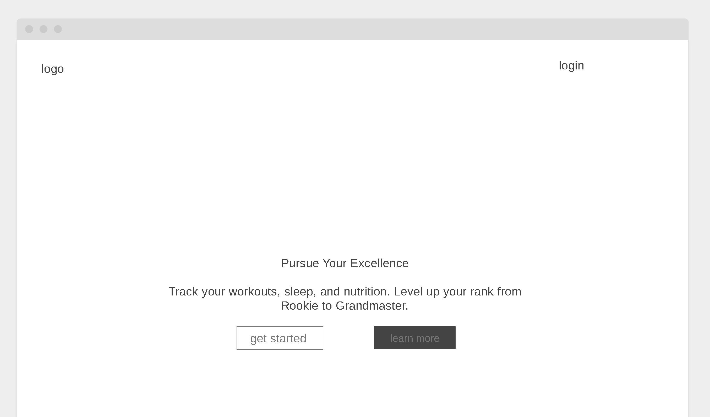

Overview
Purpose
Arete is a gamified lifestyle and fitness tracker designed to help users pursue excellence. It allows users to log daily habits such as workouts, sleep, water intake, and steps. By consistently meeting daily goals, users earn points to "level up" their rank from a Rookie to a Grandmaster, making self-improvement engaging and fun.
Audience
The target audience includes fitness enthusiasts, self-improvement seekers, and anyone looking to build better health habits through gamification. It is designed for users of all experience levels, from beginners needing motivation to advanced users ("Elites") tracking detailed metrics.
Dynamic elements
The website utilizes JavaScript to create a responsive, server-less experience:
1. Local Storage Persistence: User accounts, login sessions, daily logs, and custom goals are saved directly to the browser's local storage, simulating a database.
2. Interactive Progress Bars: Dynamic visual indicators that fill up in real-time as users log their data.
3. Rank System Logic: A calculation engine that sums cumulative points to automatically update the user's rank badge (e.g., Rookie, Elite).
4. Data Visualization: Integration with Chart.js to render dynamic graphs showing the user's point history over time.
Branding
Website Logo

Style Guide
Color Palette
The site uses a modern "Dark Mode" aesthetic to convey a sleek, high-tech feel suitable for a fitness application.
Palette URL: https://coolors.co/0f172a-1e293b-4f46e5-2dd4bf| Primary (Background) | Secondary (Cards) | Accent 1 (Indigo) | Accent 2 (Teal) |
|---|---|---|---|
| #0F172A | #1E293B | #4F46E5 | #2DD4BF |
Typography
Heading Font: "Inter", sans-serif
Paragraph Font: "Inter", sans-serif
I chose Inter because it is a highly legible, modern typeface that works exceptionally well on user interfaces and dashboards. Its clean lines complement the technical and data-driven nature of the application.
Normal paragraph example
Pursue Your Excellence. Track your workouts, sleep, and nutrition. Level up your rank from Rookie to Grandmaster. Consistency is key to achieving Arete.
Colored paragraph example
Your current rank is Elite. You have earned 1,250 points today. Keep pushing to reach the next milestone!
Navigation
Content
Home page (Dashboard)
The main dashboard serves as the command center for the user. It displays:
- Daily Motivation: A welcoming header.
- Status Cards: Total cumulative score, current user rank (with visual badge), and today's specific score.
- Metric Cards: Interactive cards for Workout, Sleep, Water, Steps, and Diet. These act as both data displays (progress bars) and buttons to open logging modals.
Page 2 (Goal Settings)
The Goal Settings page allows users to customize their experience.
- Form Inputs: Users can set their daily targets (e.g., changing the workout goal from 30 mins to 60 mins).
- Difficulty Adjustment: Changing these goals affects how hard it is to earn maximum points, allowing the app to scale with the user's fitness level.
Wireframes
Below are the wireframes for the Login/Landing view and the main application layout.
Login / Landing Page
The entry point to the application, featuring a clean layout with the logo, value proposition, and access to login/signup functionality.

Dashboard Concept
(Concept for Main Dashboard) - A grid layout featuring high-level stats at the top and actionable metric cards below.